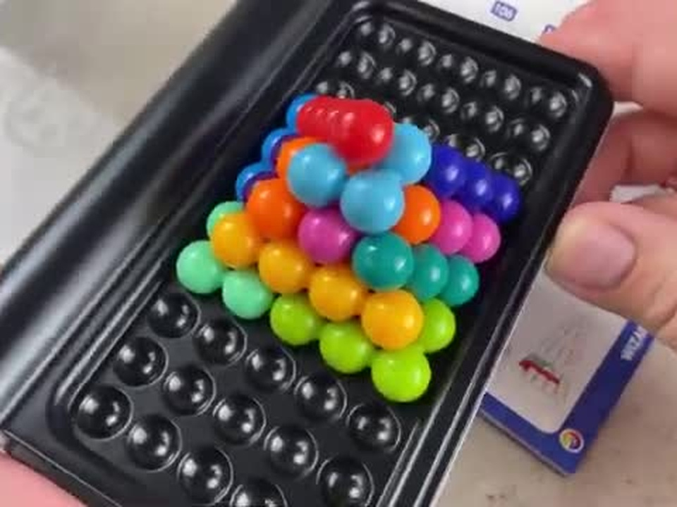

A visual policy for Puzzler.
12 pieces · 2 arms · RGB + robot feedback + known geometry
Reconstruct the scene. Execute a skill graph. Refine from physical trials.
01 / RoboSimStudio
From demonstration to simulation.
The original puzzle demonstration.

Scene + task specification + contact physics. Reconstructed geometry, friction, and release dynamics make physical rehearsal possible.
02 / Graph-as-Policy
Watch the graph execute.
One timeline for the video and graph. Select a piece or node to jump.
Typed skill graph. RGB + robot joints + public CAD → perception, grasping, transport, and placement. Independent checkpoints verify progress.
Recorded policy executionSimulation time —
Loading the recorded execution and its graph.
Policy graph
LoadingCompletedCurrentPending
03 / Self-refinement
From each trial to a better skill.
Observe → diagnose → refine → rehearse. Keep the improvement, then connect the skills.